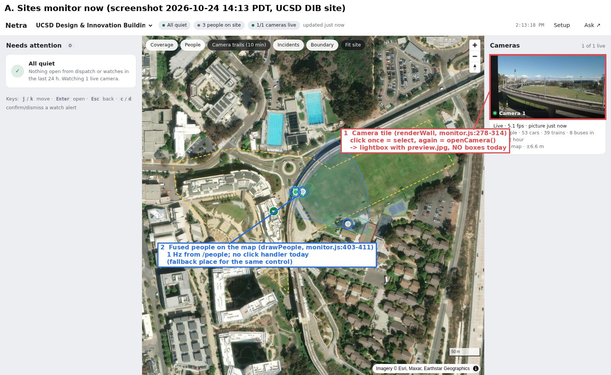
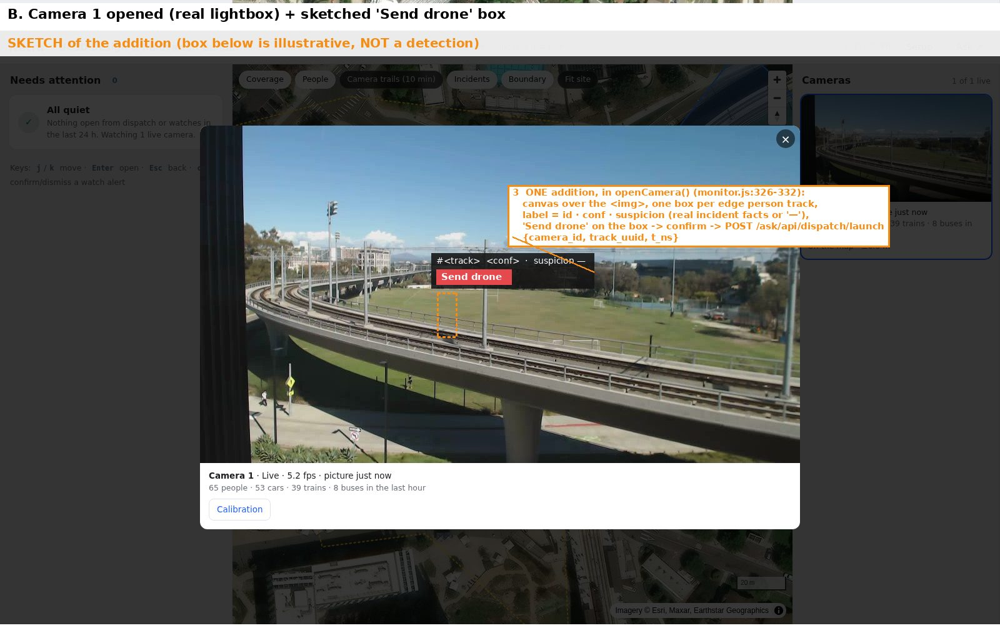

The Sites monitor we already have, with one addition: open a camera, see a box on every person with Sauron's real suspicion, click Send drone on one, and the drone launches to that person.
Nothing else in the monitor changes. The addition lives in the camera lightbox (the view you get by clicking a camera tile twice).


—. Jev scores a clip and picks one subject; there is no per-person score, so we don't invent one. With the judge off, all boxes show — and a "judge off" banner.The click is an extra trigger. Sauron's own launches stay autonomous with no approval step. If both fire on the same person, the drone takes the first and refuses the second as busy.
POST /ask/api/dispatch/launch (internal login, audited)
{"camera_id": "jetson-c920", "track_uuid": "<box.track_uuid>", "t_ns": <frame time>}
200 {"id": "jetson-c920-op-…", "located": true, "lat": …, "lon": …,
"loc_source": "sitefuse", "site_track_id": "…", "already_dispatched": false}
409 "person no longer tracked" | "no dispatch webhook is configured"
The server builds a live deploy incident with reason operator_launch, grabs the frame and crop, and hands it to the existing store.accept. That binds the person to their site track, takes the location from sitefuse now (which absorbs the 2–3 s display lag), signs and sends netra.dispatch.incident, and starts the 1 Hz position stream. A small loop closes it as subject_lost when the person is gone 30 s, which sends end to the drone.
| Item | Who | Files | Est. |
|---|---|---|---|
| W1 live boxes API | agent | ask/sitefuse.py (boxes per camera), new ask/livecam.py, GET /api/cameras/{cam}/live + frame.jpg | 3 h |
| W2 operator launch | agent | new ask/dispatch/operator.py, POST /api/dispatch/launch, lifecycle loop | 3 h |
| W3 monitor addition | agent | ask/static/monitor.js (openCamera, renderDetail) + a few CSS rules | 2.5 h |
| W4 deploy + ops | manager | droplet to main, env (webhook URL, secret, drone token), Jetson watcher for the demo window | 1 h |
| W5 drone receiver | Pranay | sauron_link listening on 0.0.0.0:8765, reachable from the droplet, same secret + token, SITL running. No code needed for fly-to-point | ≈1 h |
loc_source=sitefuse → forwarded 2xx → SITL drone takes off → positions streaming. Measure click-to-drone time; it has never been measured.end reaches SITL.subject_lost within about 30 s and sends end.In the demo, say "flies to the launch point". sauron_link accepts the position stream but does not steer by it yet.